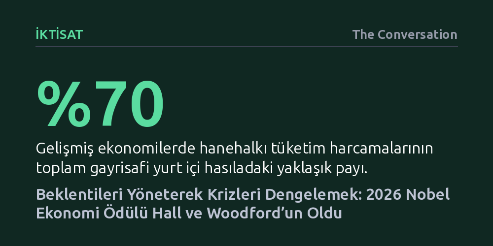

IKTISAT · The Conversation · 2026-10-13
2026 Nobel Ekonomi Ödülü, hanehalkı ve şirketlerin gelecek beklentilerini modelleyerek krizlerin derinliğini azaltan araçlar geliştiren Robert Hall ve Michael Woodford’a verildi. İkilinin çalışmaları, merkez bankalarının piyasaları yönlendirmek için kullandığı sözlü yönlendirme politikasının teorik temelini oluşturuyor.
Para politikasının yalnızca fiili faiz kararlarından ibaret olmadığını, asıl gücün piyasaların gelecek beklentilerini yönetmekte yattığını gösterir.

İsveç Kraliyet Bilimler Akademisi, 2026 Nobel Ekonomi Ödülü'nü Amerikalı iktisatçılar Robert E. Hall ve Michael Woodford'a verdi. Ödül, ikilinin ekonomik krizlerin ve daralmaların süresi ile derinliğini azaltmaya yardımcı olan makroekonomik modeller geliştirmeleri gerekçesiyle takdim edildi. Akademinin vurguladığı gibi bu çalışmalar, politika yapıcılara ekonomik döngüleri yumuşatmak ve krizlerin yanı sıra aşırı ısınan piyasa patlamalarının tahribatını dizginlemek için yeni araçlar kazandırdı.
Ekonomiler tarih boyunca iniş çıkışlarla dolu dalgalanmalar yaşadı ve iktisatçılar bu sert döngüleri kontrol altına almanın yollarını uzun süredir arıyor. Yüzyılı aşkın süre önce klasik iktisatçılar, serbest piyasanın kendi kendini er ya da geç dengeye kavuşturacağını ve devlet müdahalesinin işleri daha da kötüleştireceğini savunuyordu. Ancak 1929 Wall Street çöküşünün ardından John Maynard Keynes, ekonomilerin derin bunalımlara hapsolabileceğini göstererek faiz ve kamu harcamaları yoluyla aktif müdahaleyi savundu. Bu yaklaşım İkinci Dünya Savaşı sonrasında küresel politikayı belirlese de 1970'lerdeki petrol krizinin tetiklediği yüksek enflasyon ve işsizlik karşısında yetersiz kaldı. Keynesyen teorinin köklü bir yeniden inşaya ihtiyacı vardı.
Hall ve Woodford, 1980'lerde filizlenen 'Yeni Keynesyen' ekolün öncüleri olarak sahneye çıktı. Onların yaklaşımı, ekonomiyi yalnızca toplam üretim, enflasyon ve işsizlik gibi kaba makroekonomik göstergelerden ibaret görmeyi bıraktı. Bunun yerine, ekonomiyi oluşturan milyonlarca bireyin ve işletmenin aldığı mikro kararları temel alan modeller inşa ettiler.
Stanford Üniversitesi'nden Robert Hall, tüketim teorisine getirdiği 'rastgele yürüyüş hipotezi' ile hanehalklarının harcama veya tasarruf tercihlerinin sadece o anki cüzdan durumlarına bağlı olmadığını kanıtladı. Tüketiciler, gelecekteki gelirlerine ve genel ekonomik gidişata ilişkin beklentilerine göre hareket ediyordu. Tüketimin gelişmiş ekonomilerde milli gelirin yaklaşık yüzde yetmişini oluşturduğu düşünüldüğünde, bu tespit politika üreticileri için hayati bir pusula haline geldi.
Columbia Üniversitesi'nden Michael Woodford ise işin arz ve fiyatlama boyutunu çözdü. Şirketlerin fiyat belirleme süreçlerinde enflasyon ve faiz beklentilerinin oynadığı rolü modelleyen Woodford, 2003 yılında yayımladığı temel eserinde çığır açıcı bir gerçeği kanıtladı: Bir merkez bankası, gelecekteki faiz adımlarına dair kamuoyu beklentilerini yöneterek ekonomik aktiviteyi doğrudan yönlendirebilirdi.
1990'lı yıllara kadar merkez bankacılığı adeta gizli bir lonca gibi işliyor, para politikası kararları piyasaları ansızın gafil avlayabiliyordu. Hall ve Woodford'un ortaya koyduğu teorik zemin, bu alışkanlığı temelden sarstı. Çünkü piyasaların sürprizlerle karşılaşması belirsizliği artırıyor, aktörlerin yanlış kararlar almasına ve ekonomik dalgalanmaların büyümesine yol açıyordu.
Bu dönüşümün en somut uygulaması, 2008 küresel finans krizinin ardından merkez bankalarının benimsediği 'sözlü yönlendirme' yaklaşımı oldu. Başta ABD Merkez Bankası ve Avrupa Merkez Bankası olmak üzere otoriteler, geleceğe yönelik para politikası niyetleri konusunda şeffaf açıklamalar yapmaya başladı. Yetkililer artık yalnızca bugünkü faizi ilan etmekle kalmıyor; ekonomik görünüme ve enflasyon seyrine dair öngörülerini ve bu koşullarda ne yönde adım atacaklarını açıkça taahhüt ediyordu. Bu şeffaflık, kriz dönemlerinde faiz beklentilerini düşük tutarak yatırımların ve tüketimin canlanmasını sağladı.
Sözlü yönlendirme her ne kadar modern merkez bankacılığının vazgeçilmez bir aracı haline gelse de beraberinde ciddi tartışmalar getirdi. Avrupa Merkez Bankası araştırmaları, net iletişimin kısa vadeli faiz oynaklığını dizginlediğini gösteriyor. Ancak eleştirmenler, geleceğe dair vaatlerin uzun vadeli faizler üzerinde somut bir etkisi olmadığını, kısa vadeli faizler üzerindeki gücünün dahi tartışmalı olduğunu savunuyor.
Daha da kritik bir risk, merkez bankalarının inandırıcılık kaybı ihtimalinde yatıyor. Beklenmedik ekonomik şoklar baş gösterdiğinde, önceden belirlenen faiz patikasından sapmak zorunda kalan kurumlar güvenilirlik erozyonuna uğrayabiliyor. Günümüzde Ukrayna ve Ortadoğu'daki çatışmaların enerji fiyatlarını ve enflasyon beklentilerini yukarı çekmesi, faizlerin beklenenden daha uzun süre yüksek kalması ihtimalini doğuruyor. Kredi borcu olanların faizlerin düşeceğine şüpheyle yaklaştığı böylesi çalkantılı dönemlerde, Hall ve Woodford'un teorileri ekonomiyi tamamen öngörülebilir kılmasa da kriz dalgalarını yatıştırma çabamızın en güçlü dayanağı olmayı sürdürüyor.